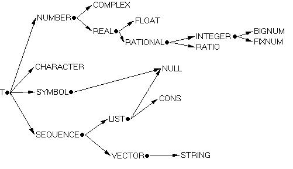

Purpose: Vectors, strings, characters and keywords.
6.1 Types - the story so far

6.2 Vectors
We have now met and played extensively with lisp's most flexible compound data type: the list. (To be pedantic, we met the cons, and you can use conses to build lists. Enough.) Lisp has plenty of other ways of grouping data together...
The function vector generates vectors (one-dimensional arrays) in exactly the same way as list generates lists. It can take any number of arguments and will generate a vector of that length:
(vector 'foo "bar" 99) => #(foo "bar" 99)
(list 'foo "bar" 99) => (foo "bar" 99)
Or, if you want to generate a vector and all you know at this stage is its length, you can use make-array (and btw there is a list equivalent called make-list, although in practice it's not very useful - why? - and therefore is not used much).
(make-array 5) => #(nil nil nil nil nil)
; stuffed with nil
(make-list 5) => (nil nil nil nil
nil) ; ditto
Note how vectors print out: #( .... ). In fact (syntactic sugar) you can use the #() syntax to input a vector in the first place:
CL-USER 2 > #(foo "bar" 99)Recall also (from the beginning of lecture 3) that everything in lisp other than a symbol or cons is self-evaluating. In particular a vector is self-evaluating, which is why it didn't need to be quoted in the example above.
#(FOO "bar" 99)CL-USER 3 >
Vectors are of type vector, and the predicate vectorp is true of them.
The functions length and reverse from last week can be used on vectors as well as on lists:
(length #(foo "bar" 99)) => 3To get values out of and into a vector, we have the setfable accessor aref
(length #()) => 0 ; the empty vector
(reverse #(foo "bar" 99)) => #(99 "bar" foo)
(setf wibble #(foo "bar" 99)) => #(foo "bar" 99)We note the following:
wibble => #(foo "bar" 99)
(aref wibble 0) => foo
(aref wibble 1) => "bar"
(setf (aref wibble 2) 'wombat) => wombat
wibble => #(foo "bar" wombat)
Error: The subscript 99 exceeds the limit 2 for the first dimension of the array #(FOO "bar" 99).
What you should be aware of, but is not "part of this course":
(defun sum-members-of-vector (vec)6.3 Strings and characters
(let* ((total 0))
(dotimes (i (length vec))
(incf total (aref vec i)))
total))(defun vector-to-list (vec)
(let* ((new-list nil))
(dotimes (i (length vec))
(push (aref vec i) new-list))
(reverse new-list)))(defun list-to-vector-a (list)
(let* ((length (length list))
(vec (make-array length)))
(dotimes (i length)
(setf (aref vec i) (pop list)))
vec))(defun list-to-vector-b (list)
(let* ((length (length list))
(vec (make-array length))
(i 0))
(dolist (thing list)
(setf (aref vec i) thing)
(incf i))
vec))
We've also met and played with strings. Here is a string: "Lisp is so wonderful". We have also met a couple of ways of generating strings: typing them in between quotation marks, and using (format nil ...). Another is to use the function make-string:
(make-string 5) => some string of length 5 filled with random garbageIf you need to get a quotation mark into a string, escape it with a backslash, thus "\"" is a string containing one character: a quotation mark. To get a backslash into a string, escape it similarly: "\\".
Any string is also a vector (we might say that string is a subtype of vector - see the figure in 6.1 above), so any operation you can perform on a vector can also be performed on a string. For instance, you can ask for its length, you can reverse it (as ever, this gives you a fresh string and reverses that, the original string remaining unchanged), you can aref into it to get your hands on individual characters and (setf aref) to modify them.
(setf my-string "Lisp is great") => "Lisp is great"Strings are of type string (and so the predicate stringp is true of them). The predicate vectorp also is true of them, because all strings are vectors too.
(length my-string) => 13
(reverse my-string) => "taerg si psiL"
my-string => "Lisp is great"
(aref my-string 0) => #\L
(aref my-string (1- (length my-string))) => #\t
(setf (aref my-string 6) #\t) => #\t
my-string => "Lisp it great"
(typep my-string 'string) => tEquivalently:
(typep my-string 'vector) => t
(typep #() 'string) => nil
(stringp my-string) => tEach member of a string has to be a character (try (setf (aref my-string 6) nil) and see what happens to you). This sets strings aside from lists and from more general vectors, where you can mix'n'match the types of elements and lisp doesn't care. Characters are read in and printed out like this:
(vectorp my-string => t
(stringp #()) => nil
If you want to compare a whole load of characters to see if they're
the same, use char=
(char= #\a #\a #\a) => t
(char= #\A #\a #\a) => nil
And there is a case-insensitive version of char= called char-equal
(char-equal #\A #\a #\A) => t
If you are desperate to convert between characters and their ASCII values, the functions char-code and code-char will assist:
(char-code #\p) => 112The predicate characterp is true of all characters, the predicates alpha-char-p and digit-char-p are true of letters of the alphabet and digits respectively, and alphanumericp is true of letters or digits:
(code-char 112) => #\p
(let ((characters '(#\x #\8 #\*)))If you look in the books / HyperSpec you'll find all sorts of goodies in the reference sections on strings and characters. Some random examples:
(list (mapcar 'alpha-char-p characters)
(mapcar 'digit-char-p characters)
(mapcar 'alphanumericp characters)))
=>
((t nil nil) (nil 8 nil) (t t nil)) ; the 8, while inelegant, is non-nil
(string-capitalize "ethel the aardvark") => "Ethel The Aardvark"Finally, for the sake of completeness (only), let me mention two further ways to generate strings. Given that I said that all strings are vectors and that you can create vectors with make-array...
(string-downcase "Ethel The Aardvark") => "ethel the aardvark"
(string< "Earlier" "Later") => t ; alphabetical ordering
(char-name #\x) => "Latin-Small-Letter-X"
(make-array 5 :element-type 'standard-char)... is equivalent to (make-string 5). Don't remember the details of the above, but do note that it can be done.
The other way is the function read-line which can be used for reading strings from the listener. When read-line is called, the system waits for keyboard input. Everything typed up to (but not including) the next #\Newline is returned in a fresh string. For example,
CL-USER 10 > (read-line)[If you're observant, you'll want to know what the nil is doing here. Well, read-line returns two values, the string we read in and a flag to tell you whether the string was terminated by end-of-file (as opposed to terminated by a #\Newline). Although you cannot on Windows(tm) generate end-of-file in any window you can type at, read-line can be asked to take its input from a file (or socket etc) and then the flag becomes relevant. Functions which return multiple values are a little beyond the scope of this course, but do be aware that they provide a saner alterntive to all that mucking around with "inout" parameters that other languages depend on.]
This is what I typed to generate a string which read-line returned.
"This is what I typed to generate a string which read-line returned."
NILCL-USER 11 >
6.4 Quick digression - keywords
Anyone who's still awake will have noticed the (a) the colon before the symbol element-type above and (b) that I didn't quote the symbol.
A symbol preceded by a colon is called a keyword. Keywords are symbols (so they respond warmly to symbolp) but they are distinguished by always being self-evaluating.
:brand-new-keyword => :brand-new-keywordIt's as if whenever you type in a new keyword :foo, the system goes (defconstant :foo ':foo) behind your back.
(OK, so we didn't cover defconstant before. It's like defparameter except that you guarantee not to go changing that symbol's value later on. So (defconstant foo 99) followed by (setf foo 88) signals an error.)
Keywords are mainly used in complex argument lists with lots of optional arguments. We'll come back to this later, but here's an example: the function string=. This takes two strings (let's call them string1 and string2) and returns true if they match, character for character. It's case-sensitive (use string-equal if you want case-insensitive). You can optionally specify that you only want to compare part of either string (or both), by means of the keyword arguments :start1 :start2 :end1 :end2 (which are zero-based, and which default to the start and end of the respective strings if you don't specify them). string= returns true if the supplied substrings are of the same length and contain the same characters in corresponding positions; otherwise it returns nil.
(string= "I love lisp" "lisp is wonderful" :start1 7 :end2 4) => tYou can specify the keywords in any combination and in any order.
[There is a convention that a :start argument points to the first character in the substring, and an :end argument points to the character following the end of the substring. Brownie points / smarties for telling me why.]
6.5 Practical session
Write a program to ask the user to type in a sentence, read it using read-line and then count how many words there were in this sentence.
6.6 Suggested activity / exercises etc
Pick one or both of the assignments
and work on it in parallel with the rest of this course.